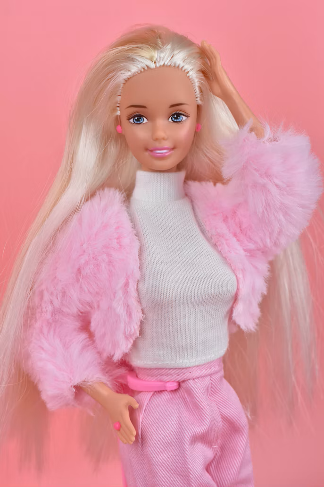

Om Barbie || Grupp 27 HTML-uppgift
Hej, jag är Barbie! Jag är en docka som skapades 1959 av företaget Mattel i USA. Jag har ett flertal filmer och serier. Jag säljs som leksaker över hela världen och är speciellt populär bland flickor.
Min början
Allt började den 9 mars 1959, när jag för första gången klev in i världen i en svartvit-randig baddräkt. Redan från start handlade det inte bara om kläder och frisyrer, det handlade om en idé om att jag kunde bli vad jag ville. Från att vara en liten gnista av fantasi i en leklåda har jag fått växa i takt med varje generation som har format mig, ifrågasatt mig och gett mig nytt liv. Varje berättelse som börjat med "Tänk om..." har varit en del av min grund.
Vägen dit
Vägen hit har varit långt ifrån rak, och ärligt talat är det precis så det ska vara. Jag har provat på det mesta: astronaut, läkare, arkitekt, presidentkandidat, bagare och mycket däremellan. Jag har haft både perfekta dagar och stunder då inget har gått enligt plan, när drömmar har fått skavas mot verkligheten och nya perspektiv har tvingat fram förändring. Att lyssna på nya röster, våga ompröva gamla roller och bygga vidare på det som faktiskt betyder något har format mig mycket mer än någon färdig mall någonsin kunnat göra.
Mitt mål
Mitt mål är att fortsätta vara en öppen dörr snarare än ett färdigt facit. Jag vill inspirera till nyfikenhet, mod och skaparglädje, oavsett om det handlar om att testa något helt nytt, bygga upp något från grunden eller bara våga ta plats precis som man är. Framtiden är inte skriven i sten, och det bästa med att aldrig sluta utvecklas är att nästa kapitel alltid kan bli ännu mer spännande.
